Mooder团队贡献系统#
Mooder是一款开源、安全、简洁、强大的（安全）团队贡献平台，基于Django、全封闭保证私密性、支持Markdown、支持Postgres/Mysql/Sqlite等多种数据库、支持Docker-compose一键化安装与更新，易于二次开发。
为什么会有Mooder#
做Mooder的初衷是为了团队内部的交流。由于众所周知的原因，国内大量社区关闭，安全技术知识的学习变得愈加困难，更多的团队将交流方式变为QQ群、微信群。
而QQ、微信等及时通信工具并不是一个交流技术的好地方，团队仍然需要一个内部社区。于是，Mooder应运而生。
Mooder从设计之初想法就是“封闭”，也就是说该社区严格控制内部隐私，仅拥有邀请码的用户可以登录社区，管理员在后台也能够踢出、删除一个用户，保证了社区的私密性。
另外，Mooder的核心理念的“贡献”。团队成员可以将自己挖掘的通用漏洞、编写的EXP、提交到其他SRC的漏洞详情、众测中挖到的漏洞等等作为一个“贡献”提交到Mooder中，然后由管理员进行审核并给予rank与积分。通过该“积分”，团队成员也可以购买其他成员提交的贡献，或者去礼品中心换取礼品等。
通过这样的“知识交换”，让团队能够更快地成长。
用户登录#
Mooder支持登录、邀请码注册、找回密码、登录激活。

注册：
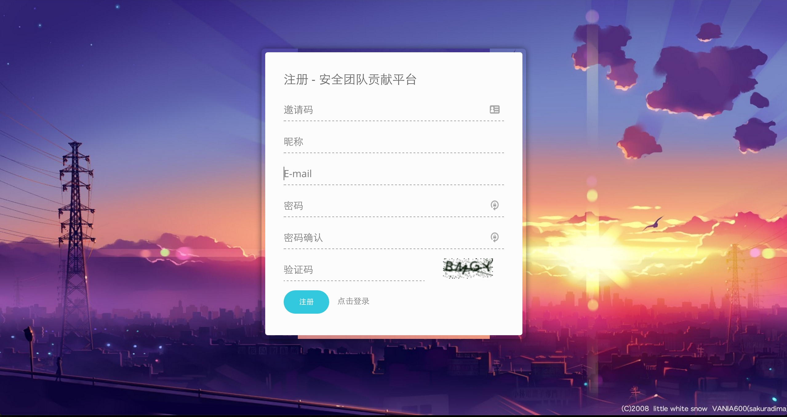
查看贡献#
贡献列表，列出所有贡献：
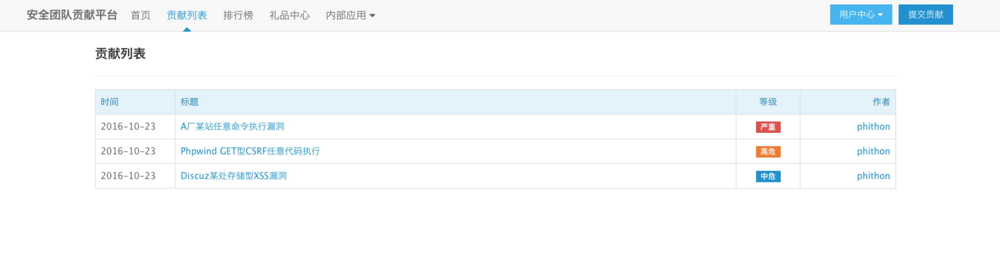
详情页面，根据贡献的私密程度判断用户是否可读。
用户在提交贡献的时候可以选择该贡献的可见性：公开、出售或私密。公开的贡献，所有平台注册用户均可查看；出售的贡献，其他用户需要付出一定价格购买，才能查看当前贡献，而贡献提交者将可以或者这笔费用；私密的贡献，除贡献作者与审核员外任何人无法查看。
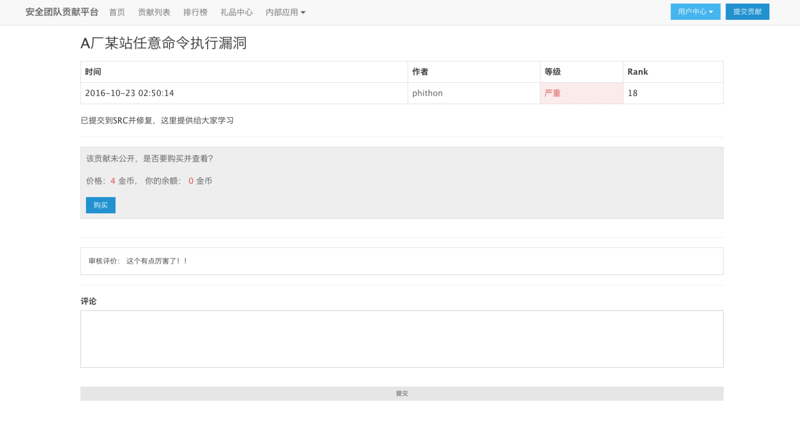
提交与审核贡献#
提交贡献支持Markdown编辑详情，支持上传图片与附件，支持预览：
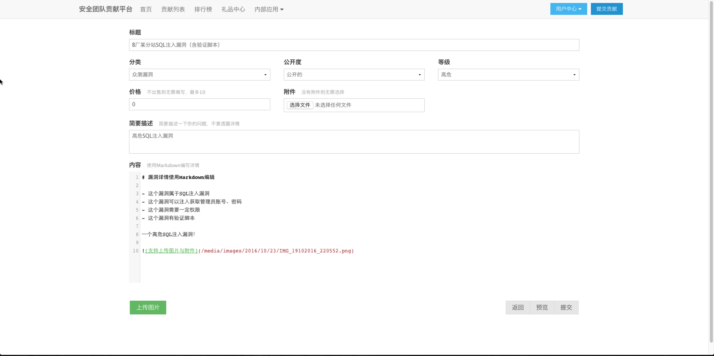
管理员后台审核贡献：
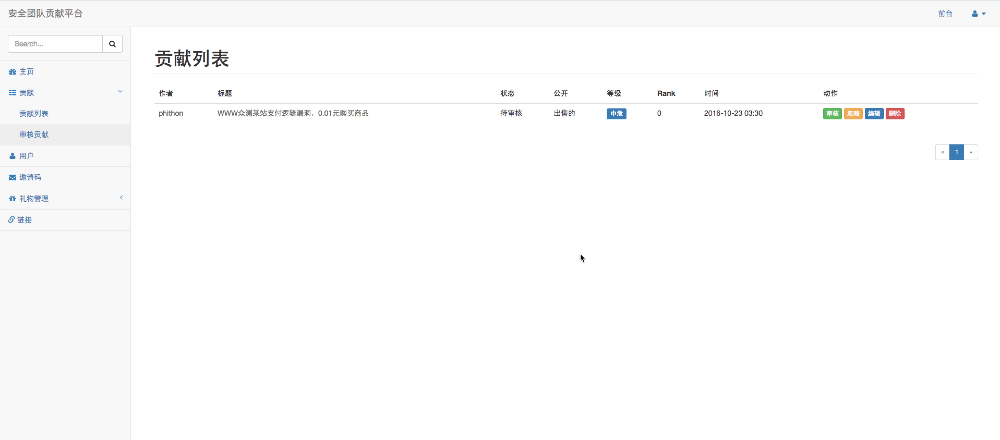
礼品中心#
团队负责人可以在后台进行礼品上架，用于奖励乐于分享的成员。前台礼品中心：
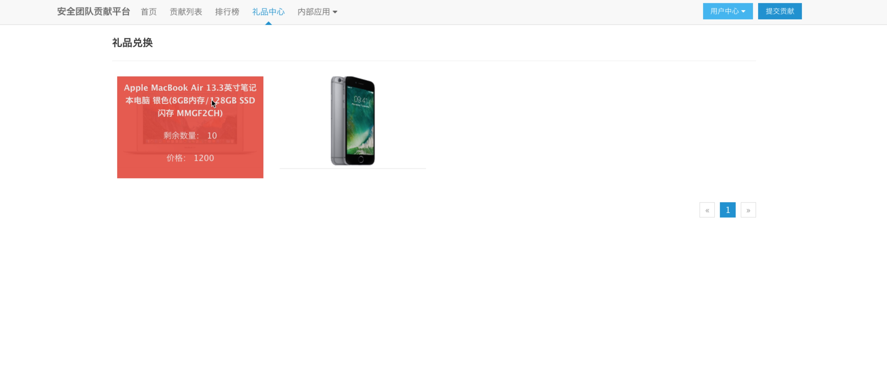
用户填写收货地址进行礼品兑换：
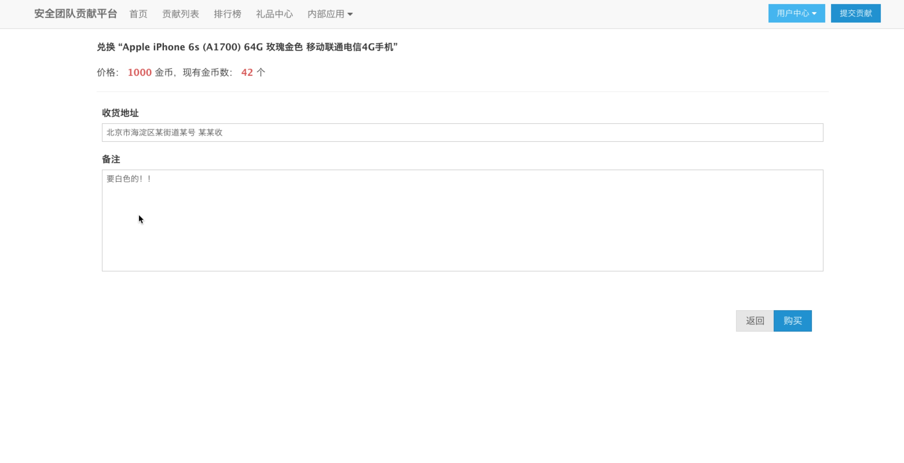
管理员后台查看购买记录：
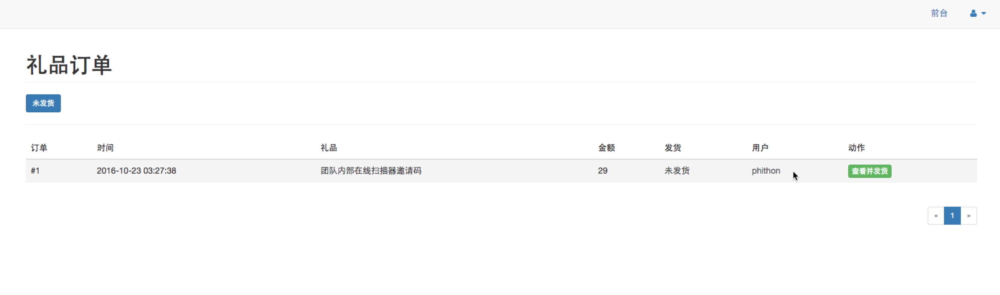
虚拟物品可以直接通过“管理员回复”发货：
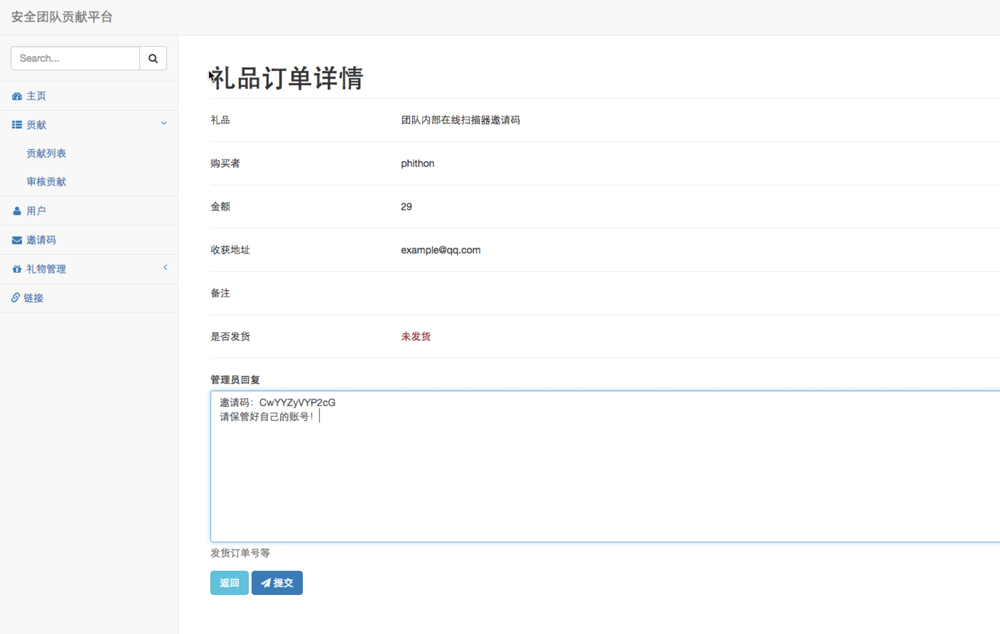
后台管理#
审核员后台，可以方便地进行贡献（漏洞）的审核，也能极好的控制权限——可以控制审核员只能审核贡献、运营人员只能修改礼品与发货。
后台首页显示一些统计信息：
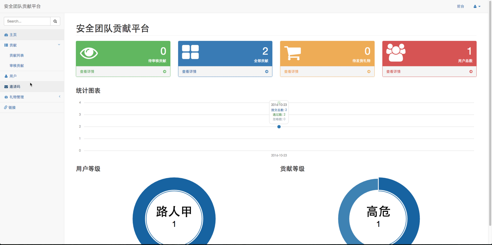
一键生成邀请码：

增加内部应用：
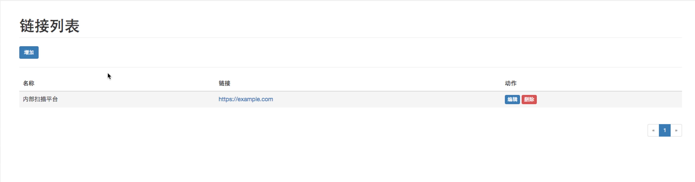
用户奖惩：
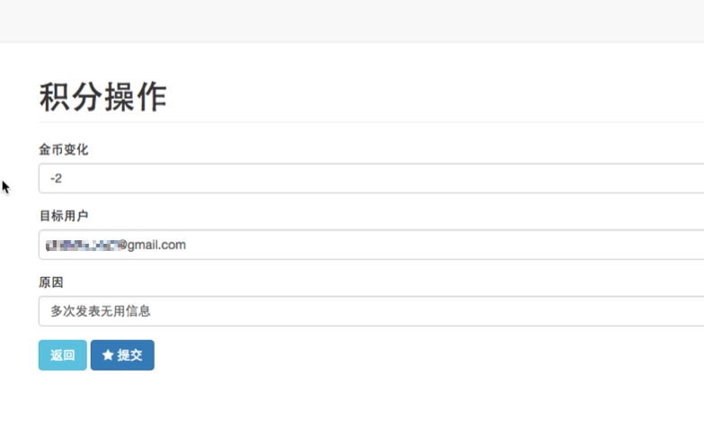
查看用户奖惩日志：
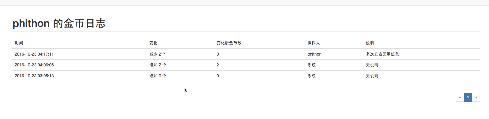